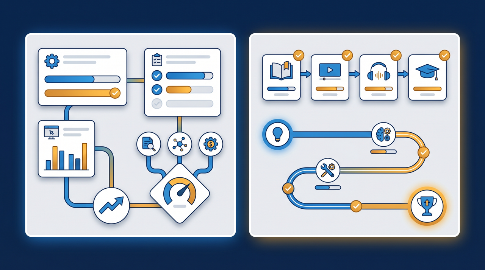
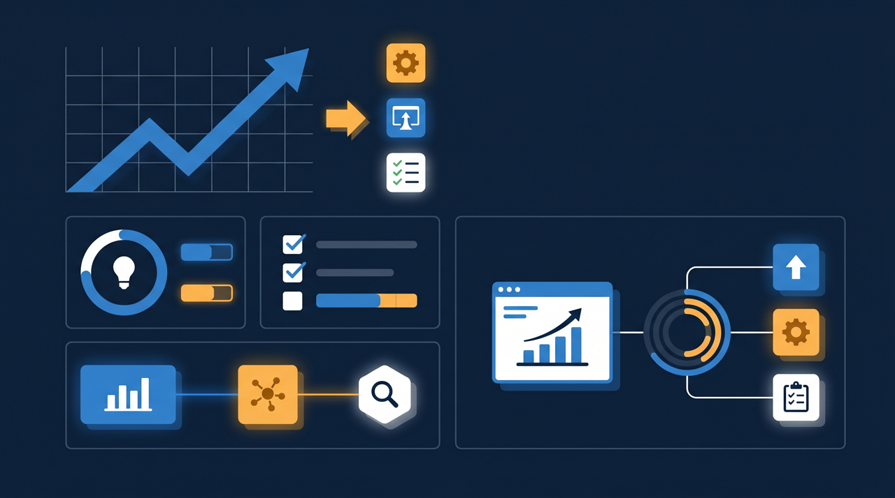
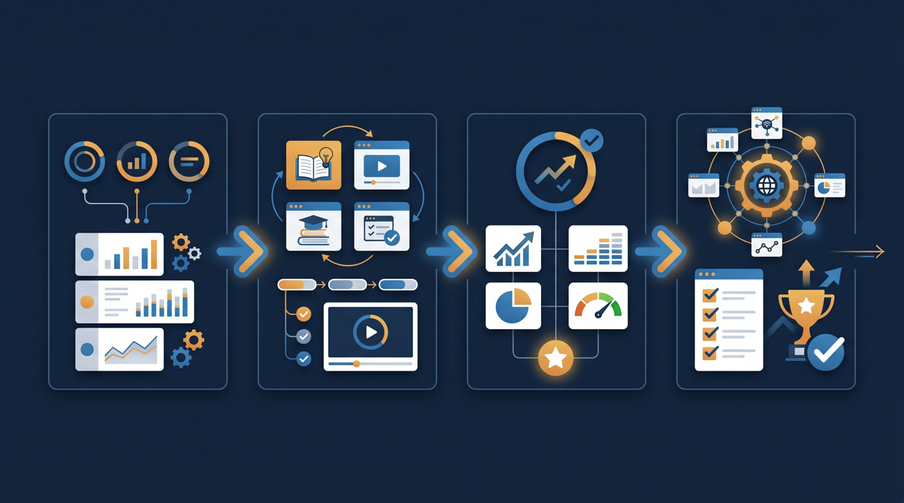

「あの研修、もう受けてもらえましたか？」——担当者がこの一言を何度も繰り返している会社は、少なくありません。誰がどこまで受けたか分からない状態が続くと、催促に追われるうえ、研修が本当に役立ったのかも見えてきません。この記事では、研修の進捗管理とは何かを整理しつつ、受講状況を見える化するメリットと、その具体的な進め方を現場目線でお話しします。

研修の進捗管理とは？まず言葉を整理する
研修の進捗管理とは、ひとことで言えば「誰が・どの研修を・どこまで受けたか」を記録して、受講の状況を見える形で把握することです。研修を配って終わりにするのではなく、受講が進んでいるか、止まっている人はいないか、を追いかける取り組み、と考えると分かりやすいですよね。
ここで大事なのが、進捗には段階があるということです。単に「受講した／していない」を追うだけでも管理にはなりますが、それだけでは「見たけれど分かっていない」人を見逃してしまいます。動画をどこまで視聴したか、確認テストに合格したか、というところまで含めて把握すると、研修が実際に効いているかどうかまで見えてくるわけです。
厚生労働省の能力開発基本調査でも、計画的な教育訓練を実施する企業の状況が継続的に調べられていますが、研修を「実施したかどうか」と「効果が出たかどうか」は別の話です。実施した研修がきちんと受講され、理解につながっているかを確かめる手段が、進捗管理だと言えます。たとえば、安全教育を全社員に配ったある会社では、配信した直後は「やった」という安心感がありました。ところが実際にログを見てみると、半数近くが最後まで視聴していなかった、という場面もあります。見える化して初めて、配っただけでは届いていなかったことに気づけるんです。
なぜ進捗管理が必要なのか
「受講は本人の責任だから、わざわざ管理しなくても」と考える方もいます。けれど、見える化されていない状態は、思った以上に組織に負担をかけていることが多いんです。理由を整理してみましょう。
1. 未受講者が分からず、催促に追われる
進捗が見えないと、誰が受けていないのかを特定できません。結果として「全員にもう一度お知らせする」しかなくなり、すでに受けた人にまで催促のメールが飛びます。受けた側からすれば「もう受けたのに」と感じますし、担当者は何度も同じ案内を出すことになる。この往復が、見えないことの最初の負担です。
2. 研修が効いているか判断できない
受講状況が記録に残らないと、「この研修は役に立ったのか」を後から振り返る材料がありません。来年も同じ内容でいいのか、どこを直すべきなのかを決める根拠がないまま、なんとなく前年踏襲になりがちです。データがないと、改善のしようがないわけですね。
3. 助成金や監査の証明に困ることがある
研修の実施を社外に示す必要が出たとき、記録がなければ証明できません。人材開発支援助成金のように、訓練を実施した事実を書類で示すことが求められる制度を使う場合、誰がいつ何時間受講したかが残っていないと、後から整えるのに苦労することがあります。記録は、いざというときの裏付けにもなるわけです。

受講状況を可視化する4つのメリット
進捗を見える化すると、現場では具体的にどんな変化が起きるのでしょうか。代表的なものを挙げてみます。
- 未受講者だけに絞って案内でき、無駄な催促が減る
- 受講期限と残りの本数が本人にも見え、自発的な受講が進む
- 確認テストの結果から、理解が浅い箇所を特定できる
- 部署ごとの受講率が分かり、進んでいない組織に手を打てる
- 受講日・受講時間が記録に残り、実施の証明に使える
特に効いてくるのが、未受講者を絞り込めることです。全員に一斉案内するのと、受けていない3人にだけ声をかけるのとでは、受け手の印象がまったく違います。「あなただけまだですよ」と個別に伝えられると、後回しにしていた人も動きやすくなる。催促の総量を減らしながら、受講は進む、という状態をつくれるわけです。
もう少し具体的に考えてみましょう。ある多店舗展開の小売業では、新しい接客ルールの研修を全店に配信していました。以前は本部の担当者が各店に電話して受講状況を聞いて回っていたのですが、これが半日仕事だったそうです。受講状況が一覧で見えるようになってからは、画面を開けば未受講の店舗がすぐ分かるので、その店にだけ連絡すればよくなった。電話の本数も、担当者の時間も大きく減ったといいます。見える化は、催促という作業そのものを軽くしてくれるんですよね。
Excel管理の限界と、つまずきやすい点
進捗管理というと、まずExcelで受講者リストを作る会社が多いと思います。実際、対象者が数人で研修も1本なら、それで十分回ります。ところが、人数や研修の本数が増えてくると、Excel管理はだんだん苦しくなってくるんです。
一番の負担は、更新が手作業になることです。受講者が研修を受けても、その事実は自動では記録されません。誰かが受講状況を聞き取って、セルに「済」と入力する必要があります。対象者が100人、研修が10本あれば、それだけで1000個のセルを人の手で埋めることになる。しかも、月をまたいで再受講が発生すると、どれが最新の状態なのか分からなくなりがちです。
ファイルが分散するのも、つまずきやすい点です。部署ごとに別々のExcelで管理していると、全社の受講率を出すには手作業で集計し直さなければなりません。集計している間にも受講は進むので、出した数字はすでに古い、ということも起こります。J-Net21などの中小企業向け情報でも、限られた人手で管理業務をどう効率化するかは繰り返し課題に挙がっていますが、進捗管理もその一つだと言えます。
念のため付け加えると、Excelが悪いわけではありません。規模に合わなくなってきたサインが出てきたら、仕組みを見直す時期だ、というだけのことです。受講者の操作がそのまま記録に反映される仕組みに移すと、この更新と集計の手間から解放されます。
LMSを使った進捗管理の進め方
そこで現実的な選択肢になるのが、学習管理システム（LMS）を使う方法です。LMSは、研修動画や確認テストを配信しつつ、誰がどこまで受けたかを自動で記録してくれる仕組みのことです。受講者がログインして動画を視聴すれば、その進捗がそのままデータとして残る。担当者が手で入力する必要がないわけです。
具体的な進め方を、4つのステップで見てみましょう。
ステップ1：管理したい研修と対象者を決める
まずは対象を絞ります。「全社員に安全教育」「新入社員に基礎研修」というように、研修と受講対象をはっきりさせる。あわせて、いつまでに受けてほしいかという受講期限と、何をもって修了とするかの条件も決めておきます。ここが曖昧だと、後の進捗の見方もぼやけてしまいます。
ステップ2：教材と確認テストをLMSに載せる
研修動画や資料をLMSに登録し、必要なら確認テストを付けます。受講したかどうかだけでなく理解度まで見たい場合は、テストをセットにしておくと、後でつまずいている箇所が分かるようになります。
ステップ3：受講状況を一覧で確認する
配信後は、管理画面で受講状況を確認します。誰が完了し、誰が途中で止まり、誰が手をつけていないかが一覧で見えるので、状況の把握に時間がかかりません。部署別の受講率が出せる仕組みなら、進んでいない組織を早めに見つけられます。
ステップ4：未受講者に絞って案内する
止まっている人が分かったら、その人にだけ案内を送ります。LMSによっては、未受講者へのリマインドを自動で送れるものもあり、担当者が手作業で送る手間を減らせます。受講が進んだら、また状況を確認する。この繰り返しで、催促に追われず研修を回せるようになります。

進捗の「数字」をどう活かすか
ところで、進捗を見える化すると数字が手に入りますが、その数字をただ眺めるだけでは意味が半減してしまいます。せっかくのデータを、次の手につなげたいところですよね。
たとえば、受講率が部署によって大きく違う場合。ある部署だけ極端に低いなら、その部署では研修の時間が取れていないのかもしれませんし、案内が現場まで届いていないのかもしれません。数字は「なぜそうなっているのか」を考えるきっかけになります。全体の平均だけ見ていると気づけない偏りも、部署別に分けると見えてくるわけです。
確認テストの結果も、活かしどころがあります。多くの受講者が同じ問題でつまずいているなら、その箇所は教材の説明が足りない可能性があります。つまり、受講者の理解度は、教材を直すためのヒントにもなるんです。研修を一度作って終わりにせず、データを見ながら手を入れていくと、回を重ねるごとに研修の質が上がっていきます。
そしてもう一つ、進捗の記録は時間の経過とともに価値が増していきます。今年の受講状況だけでなく、去年との比較ができるようになると、「研修の浸透が早くなった」「特定の層の受講が遅れがち」といった傾向が見えてきます。一年単位では気づきにくい変化も、記録を積み重ねることで見えるようになる。進捗管理は、その場の催促を楽にするだけでなく、組織の教育を長い目で良くしていく土台にもなるわけです。
進捗管理を始めるときの注意点
最後に、進捗管理を始めるときに気をつけたい点を挙げておきます。仕組みを入れること自体が目的になってしまうと、かえって現場に負担をかけることがあるためです。
まず、追う項目を最初から増やしすぎないこと。視聴時間も、テスト得点も、再受講回数もまとめて追おうとすると、運用が重くなり、データを見る側も疲れてしまいます。まずは目的に必要な最小限から始め、足りなければ後から増やすほうが続きやすい傾向があります。
次に、数字で人を追い詰めないこと。受講率を見える化すると、未受講者が特定できる反面、それが過度なプレッシャーになると、形だけ受講して中身が頭に入らない、という事態になりかねません。進捗は「責める材料」ではなく「支援するための材料」だと位置づけ、受けやすい環境づくりとセットで考えることが大切です。
そして、記録を一か所に集めること。受講状況が複数のファイルやシステムに散らばると、結局また集計の手間が発生し、見える化の効果が薄れます。研修の配信から受講記録、確認テストまでを1か所にまとめておくと、必要なときにすぐ全体を把握できる状態を保てます。
まとめ：見える化が、催促と推測から担当者を解放する
研修の進捗管理は、誰がどこまで受けたかを記録し、受講状況を見える形にする取り組みです。見えていない状態は、未受講者の特定ができず催促に追われ、研修が効いているかも判断できないという、もろさを抱えています。
受講状況を可視化すると、未受講者だけに絞って案内でき、確認テストから理解の浅い箇所が分かり、受講日や受講時間が実施の証明にも使えるようになります。Excelでも小規模なら回りますが、人数や本数が増えたら、受講操作がそのまま記録に残る学習管理システム（LMS）に移すと、更新と集計の手間から解放されます。
進捗で得た数字は、眺めるだけでなく次の手につなげることが肝心です。部署別の受講率や確認テストの結果を、研修を良くする材料として活かしていく。なお、受講日・受講時間・修了状況の記録は、人材開発支援助成金のように訓練の実施を示す書類が求められる制度を使う際にも役立つことがあります。まずは管理したい研修を1つ決め、対象者と期限と修了条件をはっきりさせるところから始めてみてください。
よくある質問
誰が・どの研修を・どこまで受けたかを記録し、受講状況を見える形で把握する取り組みのことです。受講したかどうかだけでなく、視聴の進み具合や確認テストの結果まで含めて追うと、研修が実際に役立っているかを判断しやすくなります。
規模が小さいうちはExcelでも回りますが、対象者が増えたり研修の本数が増えたりすると、集計と更新の手間が一気に重くなる傾向があります。受講者本人の操作が記録に反映されない点も負担になりやすく、人数が増えてきた段階で仕組みの見直しを検討する企業が多いようです。
見える化そのものが受講を強制するわけではありませんが、未受講者が誰か分かることで声かけやリマインドの的が絞れるため、結果として受講が進みやすくなることが多いです。締め切りと残りの本数が本人にも見える状態にすると、自発的な受講につながりやすい傾向があります。
目的によります。受講したかどうかの確認だけなら修了フラグで足りますが、理解度まで把握したい場合は確認テストの得点や再受講の回数まで見るとよいでしょう。最初から細かく追いすぎると運用が重くなるため、目的に必要な範囲から始めるのが現実的です。
人材開発支援助成金などの制度では、訓練を実施した事実を示す記録が求められることがあります。受講日・受講時間・修了状況がシステムに残っていると、こうした書類を整えやすくなる場合があります。ただし要件は制度や年度で変わることがあるため、詳細は公式情報や窓口で確認することをおすすめします。
まずは管理したい研修を1つ決め、対象者・受講期限・修了の条件を明確にするところから始めると整理しやすいです。そのうえで、受講操作がそのまま記録に残る学習管理システム（LMS）に載せると、集計の手間をかけずに状況を把握できるようになります。